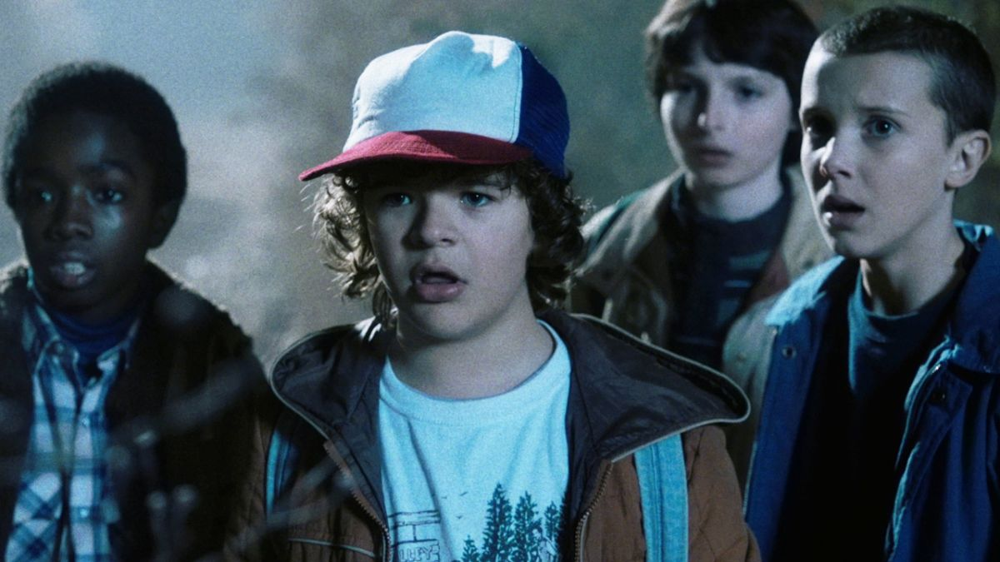
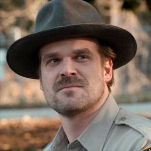
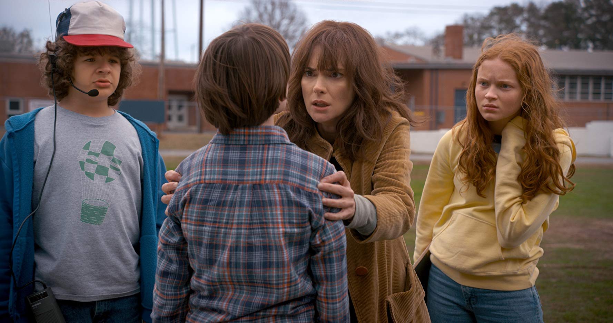
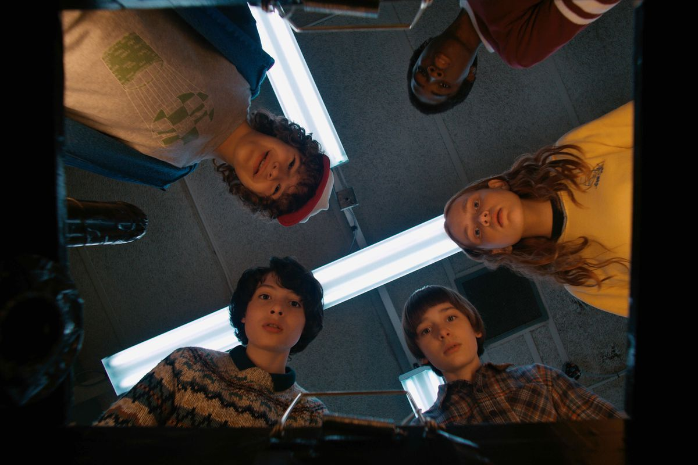
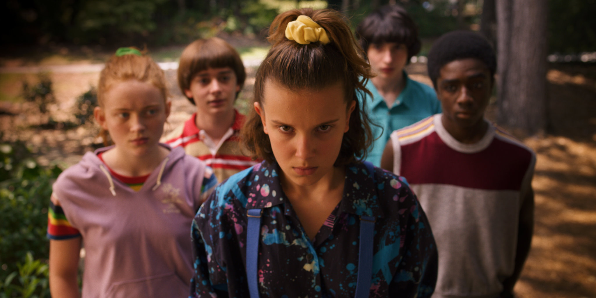
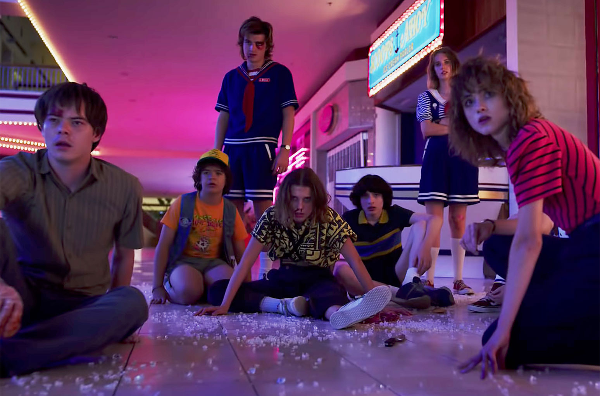

6 ноября 1983 года в штате Индиана, в вымышленном городе Хоукинс таинственным образом исчезает 12-летний Уилл Байерс (Ноа Шнапп). Мать пропавшего мальчика, Джойс Байерс (Вайнона Райдер), не находит себе места, пытаясь найти сына. За помощью она обращается к начальнику полиции Джиму Хопперу (Дэвид Харбор), который начинает расследование исчезновения. Друзья Уилла тоже отправляются на поиски пропавшего, но встречают в лесу девочку, называющую себя Одиннадцать (Милли Бобби Браун) с необычными способностями — телекинезом и телепатией, которая что-то знает об их пропавшем друге. Вскоре выясняется, что к исчезновению как-то причастна секретная правительственная организация, занимающаяся исследованием портала, ведущего в параллельное измерение (Изнанка).
 Прошёл год со дня победы над чудовищем из параллельного измерения. Уилла мучают видения и перемещения на «обратную сторону», вызванные гигантским Теневым Монстром. Джим Хоппер прячет Одиннадцать от правительственных агентов в доме своего деда посреди леса. Шериф Хоппер находит загадочно заражённые тыквы, недалеко от которых он находит слизь, вызванную «обратной стороной». Дастин (Гейтен Матараццо) находит загадочное животное, которое почти сразу узнает Уилл. В Хоукинс переезжает ровесница друзей по имени Максин (Сэди Синк). Дастин и Лукас (Калеб Маклафлин) принимают её в компанию, в отличие от Майка (Финн Вулфард), тоскующего по Одиннадцать и пытавшегося связаться с подругой по рации. Оди, в свою очередь, тоскует по нему, слушая его 353 дня. Но она не может отвечать, из-за запрета Хоппера.
 В 1984 году советские военные пытаются открыть свой портал в параллельное измерение, но терпят неудачу. Следующую попытку они откладывают на год. Летом 1985 года в Хоукинсе открывается торговый центр «Старкорт», куда ходит весь город. У Майка и Оди развиваются романтические отношения, что вызывает недовольство шерифа Хоппера, которому удается их рассорить. Дастин возвращается из летнего научного лагеря и вместе со своими друзьями Майком, Уиллом, Лукасом, Оди и Макс разворачивает на холме любительскую радиостанцию, чтобы связаться со своей подругой Сьюзи, с которой познакомился в лагере. Дастину удается перехватить радиосигнал от русских, передающих зашифрованное сообщение.
 Из официальных источников нам показали маленький ТИЗЕР о судьбе Шерифа Хоппера. Не из официальных источников, по сей день большое кол-во фоток со съемок и анонсы новых персонажей.